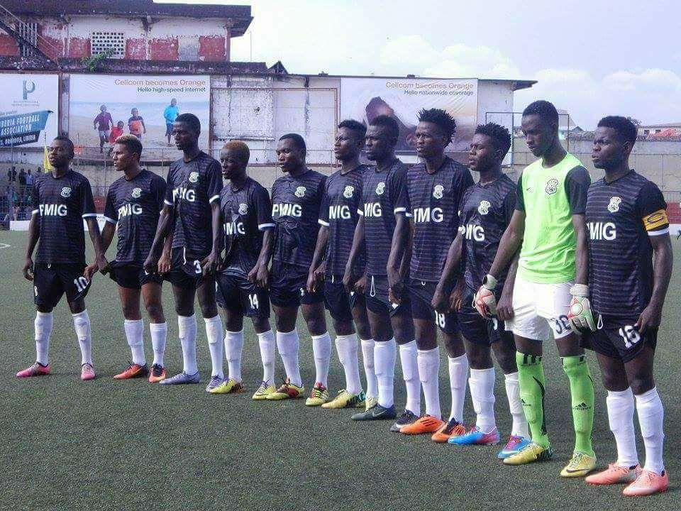
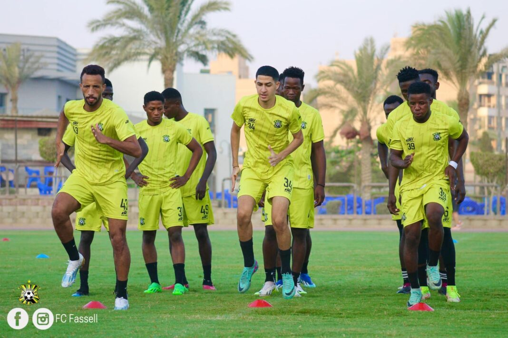

History
Founded in 2009, FC Fassell quickly rose through Liberia’s football divisions. The team is popularly known as the “Soccer Missionaries” and has been a strong force in the Liberian First Division League.

Early Years and Rapid Growth
FC Fassell made an immediate impact upon its formation, quickly establishing itself as a formidable force in the Liberian football scene. The club's early success was a testament to its strong organizational foundation and the strategic vision of its leadership. The 2013-2014 season was a pivotal moment in the club's history, as FC Fassell clinched the top spot in the Second Division, earning promotion to the Liberian Premier League.

Achievements
2014 Liberian Cup Triumph
The crowning achievement of FC Fassell's early years came in 2014 when the club won the prestigious Liberian Cup. This victory marked FC Fassell's emergence as a serious contender in Liberian football, solidifying their status as one of the top clubs in the country. The triumph also earned the club a spot in the 2015 CAF Confederation Cup, where they made their debut on the continental stage, representing Liberia in the Preliminary Round.
- Promoted to First Division in 2011
- Reached the finals of the Liberian Cup
- Known for producing talented young players
Vision for the Future
FC Fassell's vision extends beyond immediate success on the field. The club aims to build a sustainable model that nurtures young talent, promotes professionalism, and contributes to the overall growth of Liberian football. With a focus on creating a balanced team that blends experience with youth, FC Fassell is poised to reclaim its position as one of Liberia's top football clubs. As the 2024-2025 season approaches, the club is gearing up for a month-long pre-season training camp in Cairo, Egypt, where the newly assembled squad will fine-tune their skills and team cohesion. This preparation is crucial as FC Fassell aims to challenge for the Liberian Premier League title and make a significant impact in regional competitions
Notable Players
FC Fassel Has Been home to many Skill footballers who have represented Liberia internatonally.
